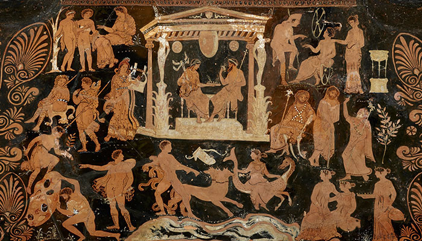
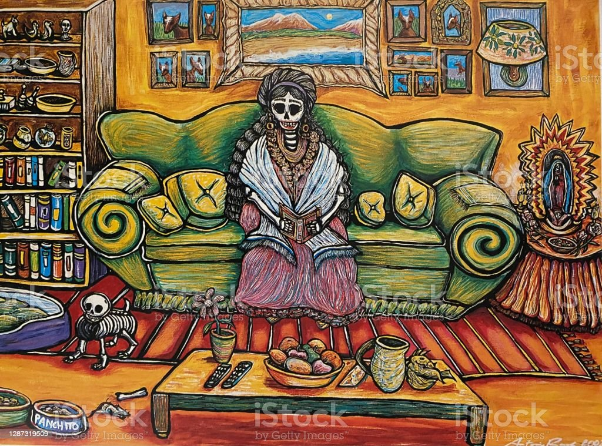

各文化觀點
陰曹地府
地下世界(Underworld)
地下冥界（Mictlán）
藝術中的呈現
三張圖分別為五七閻羅大王圖（陸忠淵）（左上）、死後世界（羅馬時期壁畫）（右上）、亡靈節的愛狗女士（Antonio Rael），可以看出三種文化對死後世界的藝術呈現之差異。中國：審判 希臘：神明做主 墨西哥：溫馨、繽紛


三張圖分別為五七閻羅大王圖（陸忠淵）（左上）、死後世界（羅馬時期壁畫）（右上）、亡靈節的愛狗女士（Antonio Rael），可以看出三種文化對死後世界的藝術呈現之差異。中國：審判 希臘：神明做主 墨西哥：溫馨、繽紛